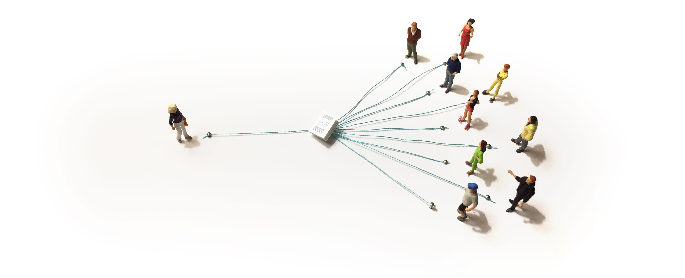

要达到大多数主题的研究级理解，就像攀登一座高山。有志于研究的人必须艰苦努力，去理解前人积累的大量工作，学习各种技巧，并培养直觉。当他们登上顶峰后，便开始进行开创性的工作，将新的石块堆到山顶，让后来者面临的山峰又高了一点。
数学是一个鲜明的例子。几个世纪以来，无数人攀登了数学的山脉，在顶峰堆起新的巨石。随着时间推移，不同的山峰逐渐形成，它们建立在那些特别优美的结果之上。如今数学的山峰如此众多且陡峭，以至于没有人能够全部登顶。即使付出毕生 dedicated 的努力，一位数学家也只能欣赏其中部分风景。
人们理所当然地认为攀登是艰难的。这反映了数学领域取得的巨大进步和累积的努力。攀登被视为一种智力朝圣，那份辛劳则是通过仪式的必经之路。但攀登其实可以容易得多。完全可以在这些山脉中修建道路和阶梯。[1] 这种攀登并不是什么值得骄傲的事。
攀登本身不是进步：它是一座由债务堆积而成的山。
债务
程序员常谈论技术债务：有些写软件的方式短期内更快，但长期来看会带来问题。管理者则谈论机构债务：机构可以快速扩张，但代价是不良习惯悄悄蔓延。两者都很容易积累，却很难清除。
研究领域同样存在债务。它有几种主要形式：
- 糟糕的阐述——通常，重要想法缺乏好的解释，人们只能艰难地去理解。这个问题如此普遍，以至于我们习以为常，没有意识到事情本可以好得多。
- 未消化想法——大多数想法最初都是粗糙且难以理解的。随着我们不断打磨它们，找到恰当的类比、语言和思考方式，这些想法会变得容易得多。
- 糟糕的抽象和符号——抽象和符号是研究的用户界面，深刻影响着我们的思考和交流方式。不幸的是，我们常常被困在最早发展出的形式主义中，即使它们很糟糕。例如，一个带有额外电子的物体被描述为“负的”，以及 [(Hartl, 2013)]。
- 噪声——作为研究者，就像站在建筑工地中央。无数论文大声呼喊着要你注意，却没有简单的方法来筛选或总结它们。[2] 我们认为噪声是专家感受到研究债务的主要方式。
研究债务的阴险之处在于它被视为常态。每个人都习以为常，没有意识到事情本可以不同。例如，人们通常认为对研究给出平庸的解释是正常的，并将其视为解释质量的上限。而在极少数情况下，真正优秀的解释出现时，人们会将其视为偶然的奇迹，而不是我们本可以系统性地做得更好的信号。
诠释劳动
在解释一个想法所投入的精力与理解它所需的精力之间存在权衡。在一个极端，解释者可以 painstakingly 精心打造一个优美的解释，让听众在不知不觉中就理解了内容，而没有意识到它本可能很难。在另一个极端，解释者只做绝对最小的工作，把听众抛弃在挣扎之中。这种精力被称为 interpretive labor [(Van Nostrand, 2015; Graeber, 2015)]。
许多解释并非一对一的。人们做讲座、写书或在线交流。在这些一对多的场景中，尽管解释的成本保持不变，但每一位听众都要付出理解的代价。[3] 因此，在诠释劳动的权衡中，理解的成本有一个乘数——有时是一个巨大的乘数。[4]

在研究领域，我们常常有一群研究者都在试图理解彼此。和之前一样，随着群体规模扩大，解释的成本保持不变，但理解的成本却随着每一位新成员的加入而增加。到了一定规模，努力理解其他所有人的工作就变得过于沉重。作为一种防御机制，人们开始专业化，专注于更窄的兴趣领域。一个领域能够维持的规模，取决于其成员如何在沟通和理解之间权衡精力分配。
研究债务就是缺失的诠释劳动的积累。年轻的想法经历一段债务期是非常自然的，就像工程中的早期原型一样。问题在于我们常常就停在了那个阶段。年轻的想法不是我们写篇论文然后抛弃的终点。当我们让事情停在那里时，债务就会堆积起来。彼此的工作变得更难理解和建立在其之上，领域也随之碎片化。
清晰思考
需要明确的是，研究债务不仅仅是想法没有被很好地解释。它是一种对想法缺乏消化的状态——或者至少，是公开版本的想法没有被充分消化。[5] 它是一种集体思维的混乱。
发展良好的抽象、符号、可视化等，相当于改进想法的用户界面。这既有助于第一次理解这些想法，也有助于清晰地思考它们。反过来，如果我们无法很好地解释一个想法，这通常表明我们对它的理解还没有达到应有的程度。
这两者在很大程度上相辅相成，并不令人意外。思考的一部分，就是与自己进行对话。
研究提炼
研究提炼是研究债务的反面。它可以带来极大的满足感，将深刻的科学理解、同理心和设计结合在一起，既对得起我们的研究，也能揭示出其中美丽的洞见。
提炼同样艰难。人们很容易以为解释一个想法只是给它加一层 polish，但好的解释往往需要对想法本身进行转化。这种对想法的精炼，可能需要和最初的发现一样多的努力和深刻理解。
这意味着我们没有容易的出路。我们无法通过让一个人写一本教科书来解决研究债务：他的精力过于分散，无法从零开始打磨每一个想法。我们也不能将提炼外包给技能较低的非专家：提炼和解释想法需要的创造力和深刻理解，与开创性研究一样多。
研究提炼不一定由你来完成，但必须由我们共同完成。
提炼者在哪里？
和理论家、实验家或研究工程师一样，研究提炼者是一个健康研究社区不可或缺的角色。目前，几乎没有人真正承担这个角色。
为什么研究者不从事提炼工作？一种可能是存在反常激励，比如希望自己的工作看起来很难。这些因素确实存在，但我们认为它们不是主要原因。[6] 另一种可能是他们不喜欢研究提炼。但我们同样认为这不是实际情况。
很多人想要从事研究提炼工作。不幸的是，这非常困难，因为我们没有给予他们支持。[7]
有志于研究提炼的人缺少许多我们习以为常的东西：职业路径、学习场所、榜样和角色模范。这背后是一个更深层的问题：他们的工作不被视为真正的研究贡献。我们需要改变这一点。
提炼的生态系统
如果你对提炼想法、追求清晰、构建优美解释充满热情，而我们却让你失望了。你有宝贵的东西可以贡献，我们却没有以应有的方式支持你。
Distill 生态系统正是为了更好地支持这类工作而做的尝试。目前，它包含三个部分：
- Distill 期刊——一个为非传统贡献提供传统认可的平台。
- Distill 奖——一项 10,000 美元的奖金，用于表彰机器学习领域杰出的解释工作。
- Distill 基础设施——用于创作优美交互式文章的工具。
这仅仅是个开始：还有大量工作需要完成。一个完整的工作生态系统还需要其他几个组成部分，包括学习这些技能的场所，以及从事这类工作的稳定就业机会。我们乐观地认为，这些会随着时间逐渐出现。
进一步阅读
- Visual Mathematics: Several mathematicians have made remarkable efforts to visually explain certain topics. Needham’s tour-de-force [(Needham, 1998)] is particularly striking, but there are several lovely examples of new clarity being brought to a topic by visually reformulating it [(Carter, 2009; Needham, 1993; Needham, Work In Progress)] and, on a smaller scale, a plethora of visual proofs.
- Explorable Explanations: There’s a loose community exploring how the interactive medium enabled by computers can be used to communicate and think in ways previously impossible. These ideas start, as many ideas in computing do, with work done by Douglas Engelbart[(Engelbart et al., 1968)] and Alan Kay[(Kay et al., 1977)]. More recently, Explorable Explanations have started to reimagine what an essay can be in this new medium. This started with Bret Victor’s [(Victor, 2011)] and has been further developed by amazing examples (eg. [(Bostock, 2014; Wittens, 2013; Schaedler, 2016)]). There are also explorations of how we can augment our ability to think in this new medium, bringing previously inaccessible ideas within reach. Once again, Bret Victor has wonderful ideas [(Victor, 2013; Victor, 2012)], as does Michael Nielsen [(Nielsen, 2016; Nielsen, 2016)].
- Research Distribution: Over last few decades, there’s been a big push for research to be freely available online. This includes the formation of arXiv.org and PLOS, and journal editorial boards resigning to start open-access journals. Increasingly, the challenge is filtering accessible content. Karpathy’s ArXiv Sanity is a lovely tool for this. Crowd curation by online communities also helps a great deal.
- Open-Notebook Science: Open notebook science, like Dror Bar-Natan’s Academic Pensieve, and massively-collaborative research projects like the Polymath Project, separate the sharing of results from formal publishing. This seems really important. Traditionally, if one doesn’t turn research into a paper, it’s basically as though you didn’t do it. This creates a strong incentive for all research to be dressed up as an important paper, increasing noise.
- Discussion of Debt and Distillation: A number of mathematicians have discussed what we call research distillation. Some great comments and references are collected in this MathOverflow thread — I’d draw particular attention to Thurston’s account of accidentally killing a field by drowning it in research debt in section 6 of [(Thurston, 1998)]. Other nice thoughts in this space include the idea of an “open exposition problem” [(Chow, 2009)], Grothendieck’s “rising sea” approach to mathematics [(Grothendieck, 1985)], and recent calls to value conceptual progress in CS more [(Aaronson et al., 2008)].